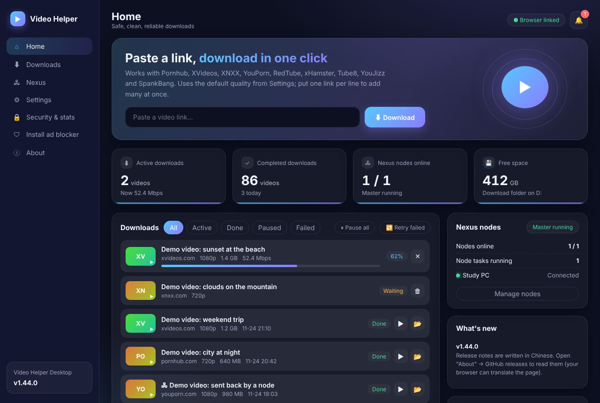
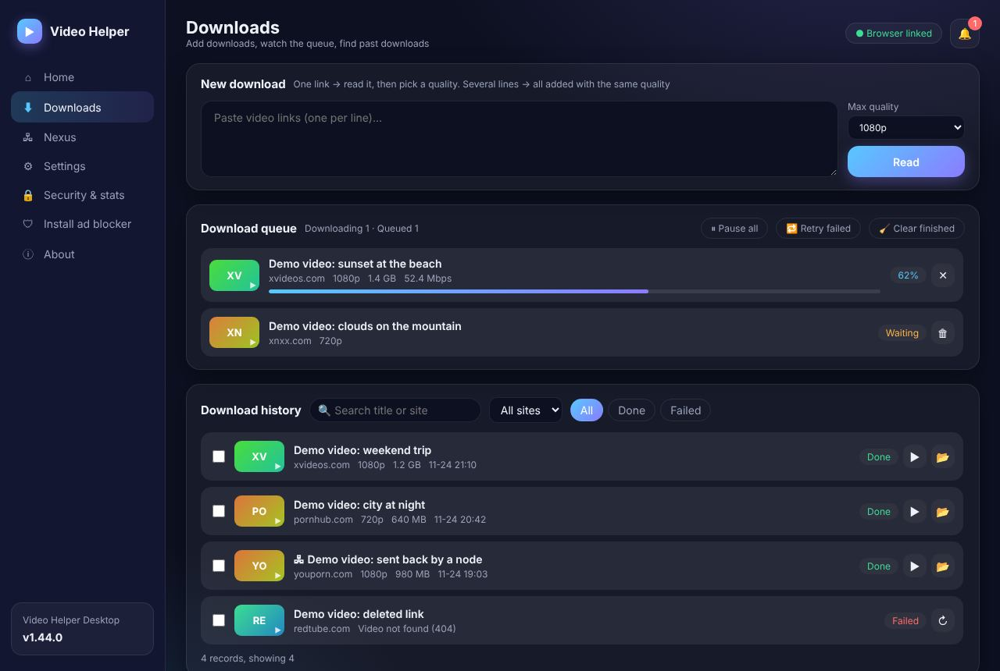
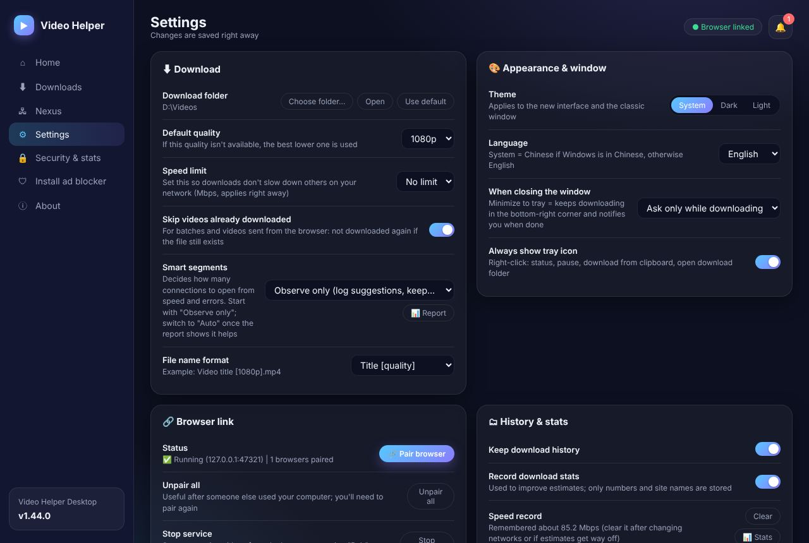
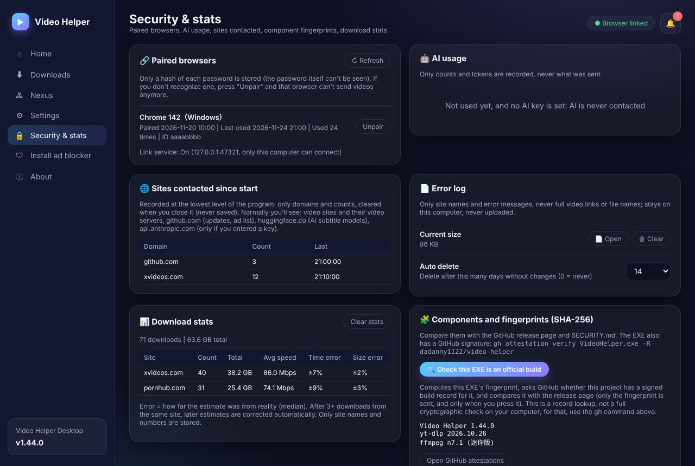
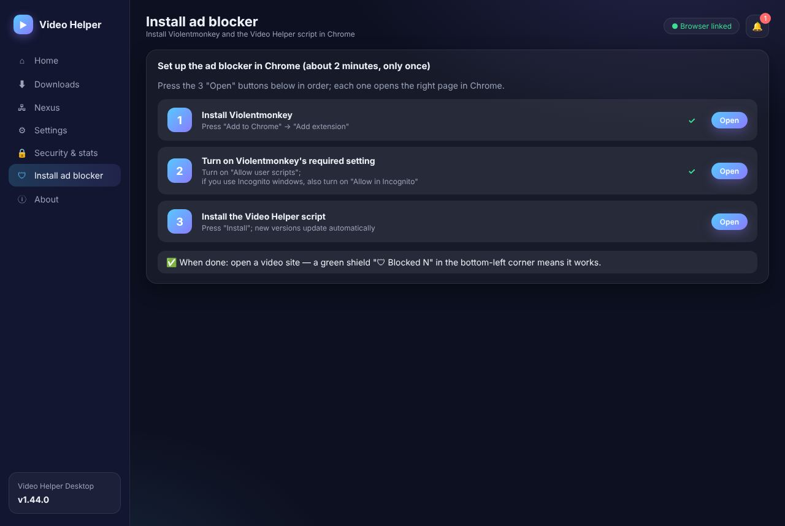
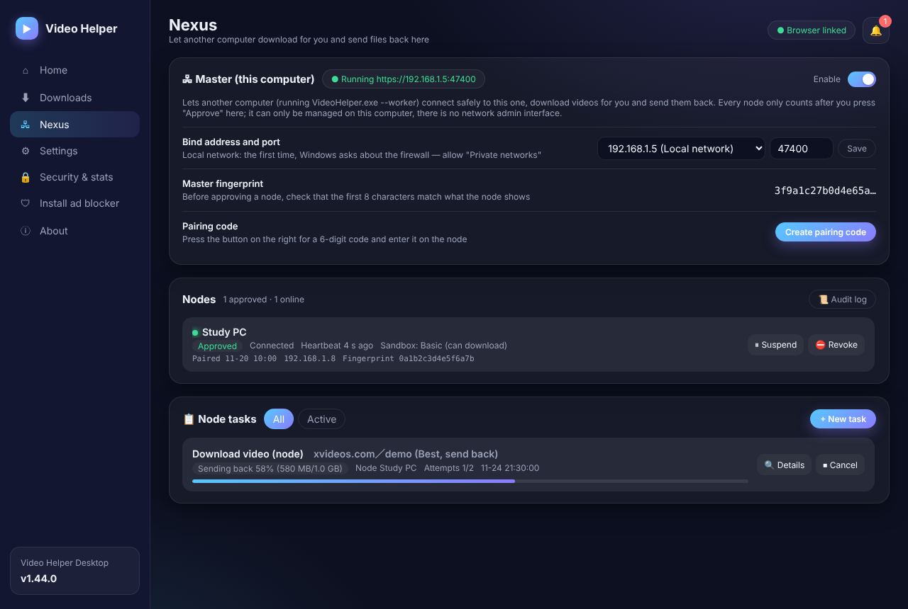

Video Helper manual
A small toolkit that blocks ads and malicious links on video sites and downloads videos in one click. Reading this takes about 5 minutes.
1. What it is
Video Helper has two parts. You can install just the first one, or use both together:
Once the two are paired, one button on the video page sends the video to the desktop app.
Full support (including downloads): Pornhub, XVideos, XNXX, YouPorn, RedTube, xHamster, Tube8, YouJizz, SpankBang.
Ad blocking and load estimates only (no downloads): MissAV, Jable, Hanime1, Eporner, HQporner, Beeg, YourPorn, XMoviesForYou, PornTrex, PornOne, 3Movs, PornDig, CumLouder, TXXX, PornDoe.
2. Install
Option A: let the desktop app set things up (easiest)
- Download VideoHelper.exe from the release page and double-click it
- If Windows says "Windows protected your PC", click "More info" → "Run anyway" (the program isn't signed with a paid certificate — see FAQ 7)
- The first time, it opens the Install ad blocker page: press the 3 "Open" buttons in order — install Violentmonkey → turn on its required setting → install the script
Option B: browser part only
- Install the Violentmonkey extension in Chrome
- Open the script page on Greasy Fork (adult scripts are only listed when you're signed in) or install straight from GitHub, then confirm in Violentmonkey
- In newer Chrome: open
chrome://extensions→ Violentmonkey "Details" → turn on Allow user scripts
3. In the browser
| What you'll see | What it does |
|---|---|
| 🛡 shield, bottom left | How many ads were blocked. Click it to see what was blocked recently and why |
| Estimate box next to the video | Current speed, how soon playback starts, how long the whole video takes to load, and the playback status (loading / playing / stalling) |
| Small labels on video lists | Estimated load time for each video |
| ⬇ Download, bottom right | Pick a quality and download (the 9 fully supported sites) |
If something was blocked by mistake
- Shield → "⏸ Pause ad blocking on this tab": only this tab, resumes when you close it
- Shield → "Blocked by mistake?": copies a report you can send to the author
- Shield → "🩺 Health check": shows whether every part is working
- Shield → "⚙ Features", or the Violentmonkey icon: switch each feature on or off
- Shield → "🔍 Check whether these are ads": compares the sites this page connects to with a free public ad list; red ones can be blocked with one click. Never block the site's own video server (green, e.g. phncdn.com)
🚨 Panic key and tab disguise (off by default)
Turn them on under shield → "⚙ Features":
- Panic key: press Esc twice quickly → the video mutes and pauses, and the tab jumps to Google. "Back" won't return to the video. To choose another page: Violentmonkey icon → "🚨 Panic key destination…". Earlier pages in the tab history can't be erased by a script, so use an Incognito window if that matters
- Tab disguise: the tab title becomes "Untitled document" and the icon becomes a document icon
4. Downloading
Press ⬇ Download to list each quality with its size and estimated time. Each line has two (or three) ways to download:
| How | Good for | Notes |
|---|---|---|
| Click the line itself | Small files | Downloads in the browser. Keep the tab open until it finishes; big files use a lot of memory |
| 🖥 Send to Desktop | Recommended, big / high quality | The desktop app downloads it in the background; you can close the page |
| 🖧 Send to node | A second computer | Another computer downloads it and sends it back (see Nexus) |
First time using "Send to Desktop": pair (once per browser)
- In the desktop app, open Settings → Browser link → 🔗 Pair browser. A 6-digit code appears (valid for 5 minutes)
- Back on the video page, press 🖥 Send to Desktop; a box asks for the code
- Enter the 6 digits — done. From now on it sends straight away, even after updates
Every time after that
- Keep the desktop app running (minimized to the tray is fine)
- Video page → ⬇ Download → 🖥 Send to Desktop next to the quality you want
- The panel shows: Reading → Queued → Downloading xx% → ✅ Done
- In the desktop app, Downloads → press ▶ to play
5. The desktop app
Use the menu on the left to switch pages. The new interface needs Microsoft WebView2 (included in Windows 11 and most Windows 10 PCs); without it the app falls back to the older window, which is Chinese only. The pictures use demo data.





🌐 Language
- Desktop app: Settings → Appearance & window → Language: System (Chinese if Windows is in Chinese, otherwise English), 繁體中文 or English. It switches instantly, including the tray menu, notifications and dialogs
- Browser script: shield → "🌐 中文 / 🌐 English" at the bottom, or the same item in the Violentmonkey menu (the page reloads). Only the script's own panels are translated; the website itself is never changed
- Not translated: video titles, names you gave your nodes, the release notes (written in Chinese — your browser can translate the release page), the older fallback window and the node window (
--worker)
Tray icon, pause, speed limit, duplicates
- Tray icon: while the app runs there's an icon in the tray (inside "^" on the taskbar). Right-click it for status, pause / resume all, download from clipboard, open download folder and quit. Drag it out of "^" onto the taskbar to keep it visible
- Pause all / Resume all: downloaded parts are kept and the download continues where it stopped (quitting the app deletes paused partial files)
- Speed limit (Settings, Mbps): applies immediately — handy so downloads don't slow down others at home
- Duplicates: if you download a video again you're asked first; batches and browser sends skip it automatically (can be turned off)
- When closing the window: ask only while downloading, always minimize to tray, or quit
🔁 Automatic failure handling
- Retrying soon: site busy (429), server error, disconnect → waits and retries automatically, up to 3 times
- Needs attention: video removed, access refused, bad link → retrying won't help; the app tells you what to check. Then press "🔁 Retry failed"
- Disk full: the queue pauses and finished files are kept; free up space and press "▶ Resume all"
- If one site says "too many requests", only that site waits; other sites keep downloading
🧠 Smart segments
MP4 downloads normally use 6 connections at once. On an unstable network that causes errors. Settings → Smart segments: Observe only (default: keeps 6, but logs what it would change), Auto (picks 1 / 2 / 4 / 6 per site from recent results) or Off. "📊 Report" compares the modes — switch to Auto once the report shows it helps.
📝 AI subtitles
- Downloads → right-click a finished video → "📝 AI subtitles" (tick several videos to do them one after another)
- Choose the spoken language (or auto-detect) and a model: Fast is fine for most PCs, Accurate is 3–5× slower
- Optional: translate to Traditional Chinese (needs an AI key in Settings) and also make a bilingual file
- Subtitles are saved next to the video with the same name; VLC and PotPlayer load them automatically. Formats: SRT, VTT or both
🖧 Nexus: a second computer that downloads for you
Another computer at home (same local network, or a VPN such as Tailscale) can act as a node: it downloads in a sandbox and sends the file back to your main computer (the Master). With only one computer you don't need this — "Send to Desktop" is enough.

- On the Master: Nexus → turn on Enable. Pick the local-network address (e.g. 192.168.x.x); when Windows asks about the firewall, allow "Private networks"
- Press Create pairing code (6 digits, 5 minutes, single use) and note the first 8 characters of the Master fingerprint
- On the node: run the same
VideoHelper.exe --worker(e.g. a shortcut with--workeradded to the target). Enter the Master address (https://192.168.x.x:47331), a name and the code, then pair. The node window is currently Chinese only. - The node shows the Master fingerprint — continue only if the first 8 characters match
- Back on the Master, approve the node that's waiting. It shows "Connected" when it works
- Giving it work: on a video page use "⬇ Download" → "🖧 Send to node" (works for Pornhub too), or Nexus → "+ New task" → Download video (node). Pornhub blocks programs that aren't browsers, so for Pornhub always send from the browser
- Send back: with "Send back to this computer" ticked (the default), the node sends the file back in 8 MB parts, each checked with SHA-256, then the whole file is checked; only an exact match lands in your download folder and history (🖧 before the title). Interrupted transfers resume where they stopped. The node deletes its copy only after the Master confirms
- Sandbox: the node downloads in a restricted child process — limited memory, CPU, processes, time and file size; it can't read your settings, keys or browser cookies and can only reach the supported sites. Honestly: this is basic process isolation, not a full sandbox; it stops buggy code and malicious links, not malware already running under the same Windows account
- Unknown (node lost): if a node disappears mid-task, the task is never re-run automatically; once you're sure it stopped, press "Mark as failed"
- Suspend cuts the connection at once; revoke is permanent (to use that computer again, pair it again). Nothing is opened to the network until you enable the Master
🔒 Security
Security & stats shows paired browsers, AI usage, sites contacted, the error log (clear it or auto-delete after N days), and component fingerprints. 🔍 Check this EXE is an official build computes the EXE's fingerprint and asks GitHub whether this project has a signed build record for it (only the fingerprint is sent, only when you press it). Details: SECURITY.md.
6. Updates
- Script: Violentmonkey checks daily. To update now: Violentmonkey dashboard → Video Helper → 🔄
- Desktop app: Settings → "Check for updates", or download the new EXE from the release page, close the old one and start the new one. Settings, history and pairing are kept
- Keep both up to date — some features need both sides updated
7. FAQ
Everything runs on your own computer; there's no server that can go down. Most problems are one of these, most common first:
1. Ads came back or downloading stopped working
Sites change their pages every few months. Update both parts first. If it's still broken, press F12 → "Console", copy the log and report it with the site name.2. Download failed (especially after the page was open a long time)
Video links expire. Reload the video page and send it again. For network drops, press "🔁 Retry failed". HTTP 410 or 403 means the site blocks programs — send from the browser instead of pasting the link into the desktop app.3. The page says "Desktop app not found"
The desktop app isn't running (minimized to the tray is fine). Check Settings → Browser link shows "Running".4. A new ad domain shows up
Shield → "🔍 Check whether these are ads", block the red ones, reload the page.5. No shield appears (the script isn't running)
Check the Violentmonkey icon is on and Video Helper is ticked. In newer Chrome turn on "Allow user scripts" for Violentmonkey inchrome://extensions (some versions need "Developer mode" first). Reload the page.6. No ad blocking in Incognito
chrome://extensions → Violentmonkey "Details" → turn on "Allow in Incognito".7. Windows or antivirus warns about VideoHelper.exe
The program isn't signed with a paid certificate, so Windows warns about "unfamiliar" programs. Click "More info" → "Run anyway". Only download from the official release page; the EXE is built automatically by GitHub from the public source code, and you can verify it in Security & stats.8. The page asks for a pairing code again
You switched browsers, cleared Violentmonkey data, or pressed "Unpair all". Just pair again.Why can't I download from MissAV, Jable or Hanime1?
Their videos are mostly unauthorized reuploads of commercial work, so Video Helper only blocks ads there.Does "check whether these are ads" cost money?
No. The desktop app compares against a free public list (about 70,000 known ad, tracking and malware domains) on your computer. Only if you add an Anthropic API key (paid, optional) are unknown domains sent to the AI — just the domain and site name.What should I include when reporting a problem?
The site and video link, a screenshot, for missed ads the F12 → Console log, and for desktop errors the content of Settings → "📄 Error log".8. Safety & privacy
- The script only runs on the supported sites
- The desktop app's browser link only listens on this computer (127.0.0.1) and only accepts paired browsers
- It only accepts video links from the 9 download sites and their own video servers
- Your viewing history is never uploaded. Stats only store site names and numbers, and can be turned off
- All source code is public on GitHub